Logo, favicon, Apple touch icon ve PWA ikonları. SVG kaynaklarından tüm PNG ve ICO dosyaları üretildi. Aşağıda her ikonu gerçek ortamında — tarayıcı sekmesinde, iPhone ve Android ana ekranında — görebilirsin.
Ana işaret üç varyantta: tam renkli (açık zemin), ters çevrilmiş (koyu zemin) ve tek renkli (baskı, favicon-benzeri kullanımlar). Hepsi vektörel, kayıpsız ölçeklenir.
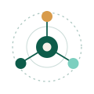
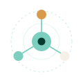
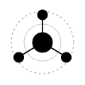
Yörünge çizgileri ve iç detaylar küçük boyutta okunmadığı için favicon'da sadeleştirilmiş bir varyasyon kullanıldı: merkez hub + üç düğüm. SVG sürümü sayesinde tarayıcı karanlık moda geçince ikon da otomatik adapte olur.
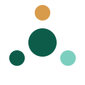
Ekosistem Sosyal — Panel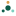
16px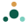
32px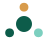
48px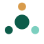
64pxfavicon.ico — 16, 32, 48, 64 pikselin tümünü içeren çok çözünürlüklü tek dosya. Legacy tarayıcılar ve botlar için.
iOS kullanıcıları siteni ana ekrana eklediğinde bu ikon çıkar. Premium bir his için radyal gradient arkaplan, ince atmosferik yörüngeler ve amber "sinyal" nodunun etrafında yumuşak bir hale ekledim. iOS'un yuvarlak köşe maskesi otomatik uygulanır.
#0E6A55 → #062C23. Amber düğüm etrafında yumuşak hale = "sinyal" hissi.
Kullanıcılar sitenizi "Ana Ekrana Ekle" ile yüklediğinde Android bunları kullanır. Maskable versiyon, içeriği %80 güvenli bölge içine sığdırır — böylece launcher ister daire ister squircle ister rounded-square maske uygulasın, logo her zaman tam görünür.
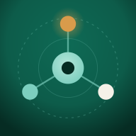
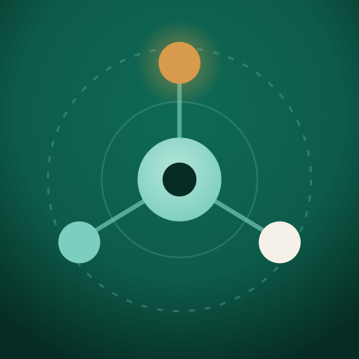
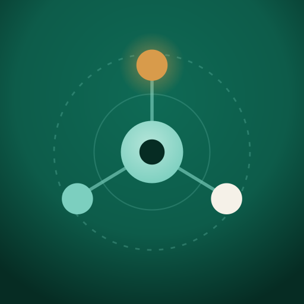
İkonları /public/icons/ klasörüne (Next.js) veya /static/icons/ (diğer framework'ler) kopyala. Ayrıca favicon.ico'yu sitenin köküne (/favicon.ico) da koy — bazı eski botlar orayı arar.
<!-- Favicon — modern tarayıcılar SVG'yi tercih eder, dark mode otomatik --> <link rel="icon" type="image/svg+xml" href="/icons/favicon.svg"> <!-- PNG fallback --> <link rel="icon" type="image/png" sizes="32x32" href="/icons/favicon-32.png"> <link rel="icon" type="image/png" sizes="16x16" href="/icons/favicon-16.png"> <!-- Legacy .ico --> <link rel="shortcut icon" href="/favicon.ico"> <!-- Apple Touch Icon · iOS ana ekran --> <link rel="apple-touch-icon" sizes="180x180" href="/icons/apple-touch-icon.png"> <!-- PWA manifest --> <link rel="manifest" href="/icons/site.webmanifest"> <!-- Tema renkleri --> <meta name="theme-color" content="#0D5C4A"> <meta name="msapplication-TileColor" content="#0D5C4A"> <meta name="apple-mobile-web-app-title" content="Ekosistem">
| Dosya | Tür | Amaç |
|---|---|---|
| logo.svg | svg | Ana logo — açık zemin için |
| logo-inverse.svg | svg | Koyu zemin varyantı |
| logo-mono.svg | svg | Tek renkli, currentColor kullanır |
| favicon.svg | svg | Tarayıcı sekmesi — dark mode destekli |
| favicon-16.png | png | 16×16 fallback |
| favicon-32.png | png | 32×32 fallback (standart tab) |
| favicon-48.png | png | 48×48 (yüksek DPI ekranlar) |
| favicon-64.png | png | 64×64 (Windows shortcut) |
| favicon.ico | ico | Multi-res (16, 32, 48, 64) — legacy |
| apple-touch-icon.png | png | 180×180 · iOS ana ekran |
| apple-touch-icon.svg | svg | Apple touch kaynağı (üretim için) |
| icon-192.png | png | 192×192 · PWA any-purpose |
| icon-512.png | png | 512×512 · PWA any-purpose |
| icon-512-maskable.png | png | 512×512 · Android maskable |
| icon-maskable.svg | svg | Maskable kaynağı |
| site.webmanifest | json | PWA manifest (name, icons, theme) |
| head-snippet.html | html | Kopyala-yapıştır entegrasyon kodu |